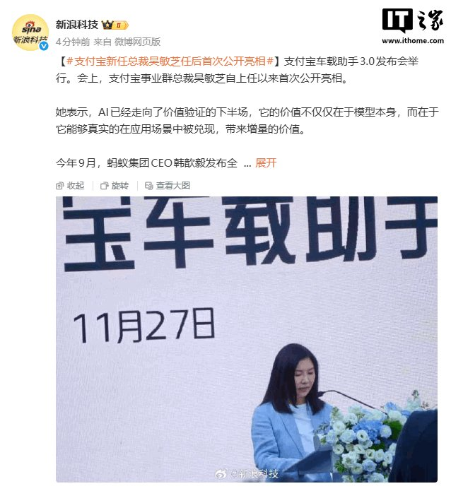

新闻 · 2026-11-27 18:00
支付宝新任总裁吴敏芝任后首次公开亮相：AI 已从能对话走向会办事，所有产品和场景都值得重做一遍
支付宝新任总裁吴敏芝上任后首次公开亮相，于11月27日出席支付宝车载助手3.0发布会。她指出AI已从对话能力进化为能办事，所有产品和场景都值得重做一遍，并强调智能座舱需具备可靠服务与支付能力作为AI载体。此前9月蚂蚁集团宣布组织调整，吴敏芝兼任CPO，整合支付宝、数字支付与芝麻信用事业群。

来源与核验
单一信源报道，未交叉核实
支付宝新任总裁吴敏芝上任后首次公开亮相，于11月27日出席支付宝车载助手3.0发布会。她指出AI已从对话能力进化为能办事，所有产品和场景都值得重做一遍，并强调智能座舱需具备可靠服务与支付能力作为AI载体。此前9月蚂蚁集团宣布组织调整，吴敏芝兼任CPO，整合支付宝、数字支付与芝麻信用事业群。

单一信源报道，未交叉核实